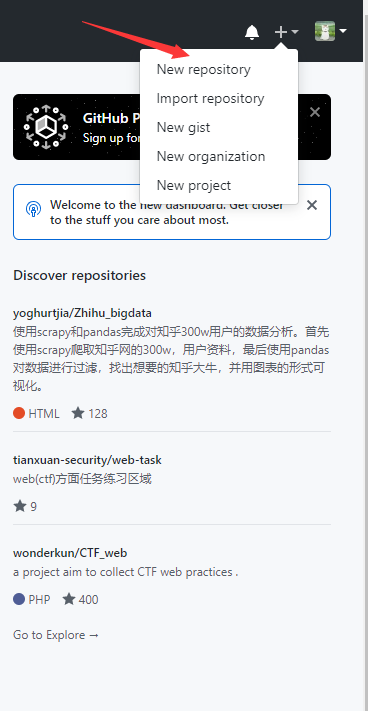
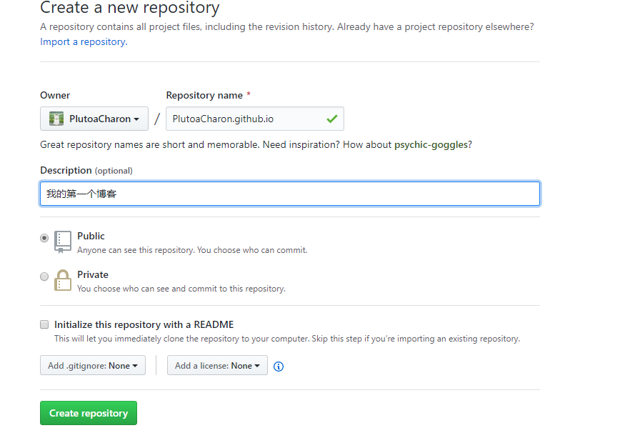
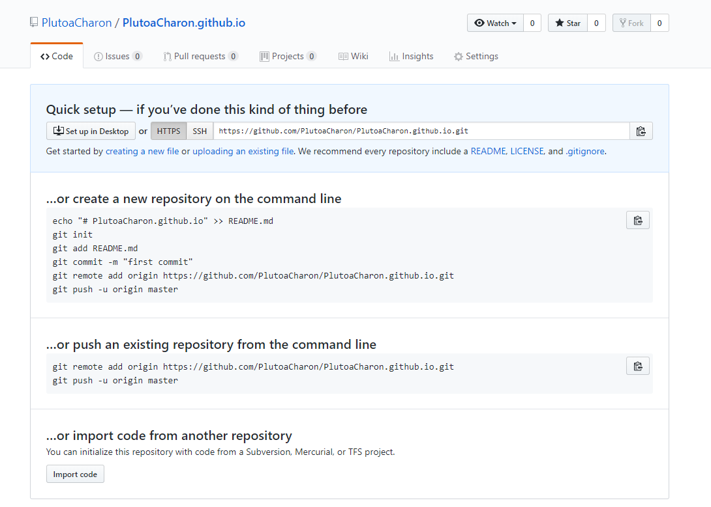
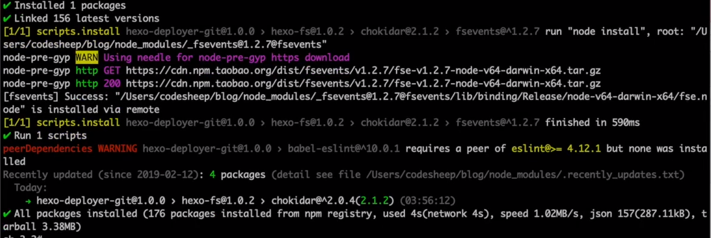
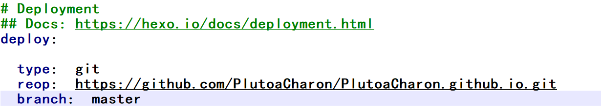
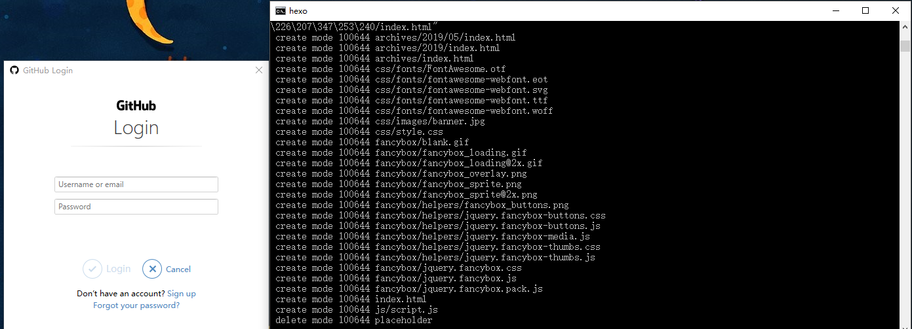
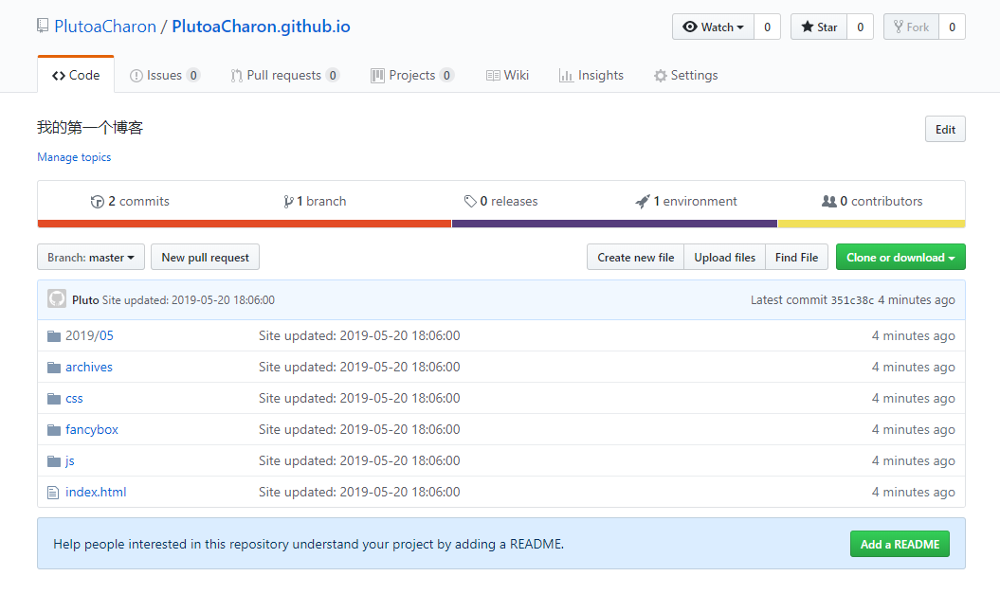

博客部署到GitHub
如果没有GitHub账号可以参考我的其他文章
有的话我们就进入到自己GitHub的主页面

点击第一个，我们新建一个仓库,在Repository name里输入自己的用户名.github.io
用户部署个人博客的GitHub仓库命名必须符合特定要求
例如我的输入是:
PlutoaCharon.github.io

点击绿色的Create repository按钮创建新的仓库,出现如下界面说明创建成功!

保留这个页面,在blog所在的路径下,在cmd里输入
cnpm install --save hexo-deployer-git
安装一个git的部署插件

在blog目录下的_config.ym文件,我们使用nodepad++打开编辑,或者使用系统自带的笔记本打开也可以
到最底部可以发现有一个Deployment配置
我们在这里做一些配置修改
type: git
repo: https://github.com/PlutoaCharon/PlutoaCharon.github.io.git
branch: master

repo的地址就是咱们新建的仓库的地址，要输入自己的仓库地址，不要输入我的哦。
注意：要在冒号后面加入空格，否则下一步会出现错误
保存以后在cmd里输入
hexo d
d的意思就是deport
输入GitHub的账号密码
我是因为安装了GitHub的桌面版才出现Login界面,如果你们没有安装的话应该是在cmd里输入的

成功!
一开始我们的仓库是空的，当我们刷新的时候会发现多了一些东西，这些就是我们博客生成的内容.

这时我们在网址里输入我们刚才的仓库地址就可以直接访问博客，而且也不用在本地打开了.
hexo d 免密登录
在 user 根目录下新建.netrc文件，填写内容：
- machine github.com
- login username //username为github账户名 （不是用来登录的邮箱或手机号）
- password password //password为github账户的密码
保存之后，再执行 hexo d 时即可直接部署，不用输入账号密码了。
这样简单的博客就部署就完成了！
接下来大家可以去网上找一些好看的主题，这里就不在一一赘述了,制作一个自己的风格博客吧。